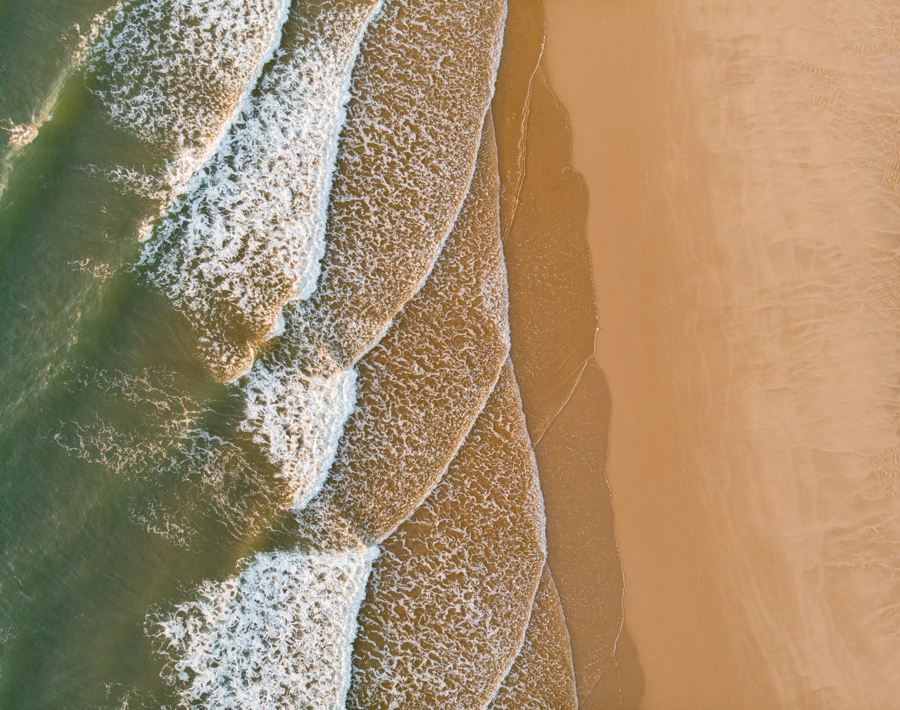
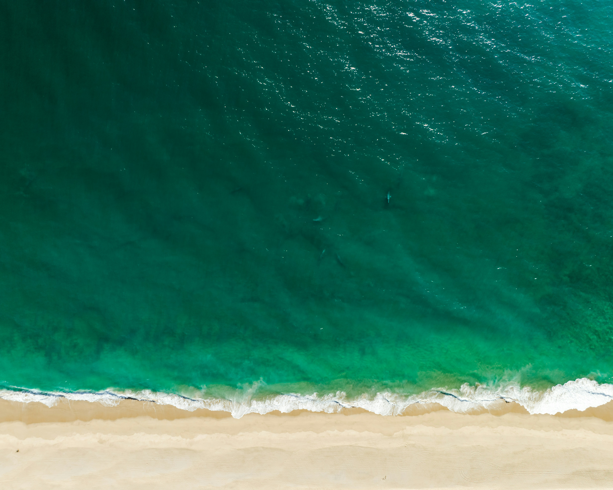

Arrecifes de Coral
Conoce los ecosistemas más coloridos y diversos que protegen la vida marina costera.
Un viaje fascinante para explorar los secretos, la biodiversidad y la belleza de nuestros océanos.
Explorar Ahora
Conoce los ecosistemas más coloridos y diversos que protegen la vida marina costera.

Adéntrate en el misterioso y vasto azul, el hogar de las especies más grandes del planeta.

El punto de encuentro entre la tierra y la incesante fuerza del agua marina.